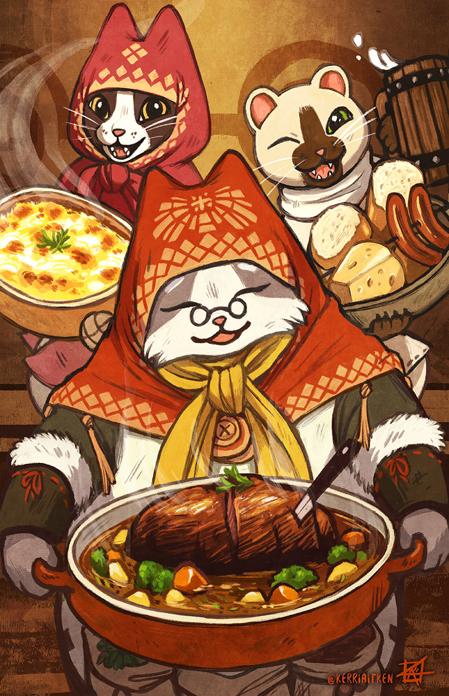

The Meowscular Chef
Once the Palico partner of the Admiral, Meowscular Chef had sworn to bulk up olds and youngs all over Astera. Hunters who managed to ignore this muscle head's critiques of their "scrawny" posture often return with massive "gain". He's all talk AND quality.

Grammeowster Chef
Former member of the First Fleet, the mentor of Meowscular Chef and used to manage the Canteen in Seliana. Whoever had even the slightest taste of her food will have to agree that - though completely different to her mentee's brawny appearance - Grammeowster's technique packs enough dynamite to launch your gustatory cells all the way to 7th heaven. Best-seller author with 7 billion copies of "How to eat everything" sold.